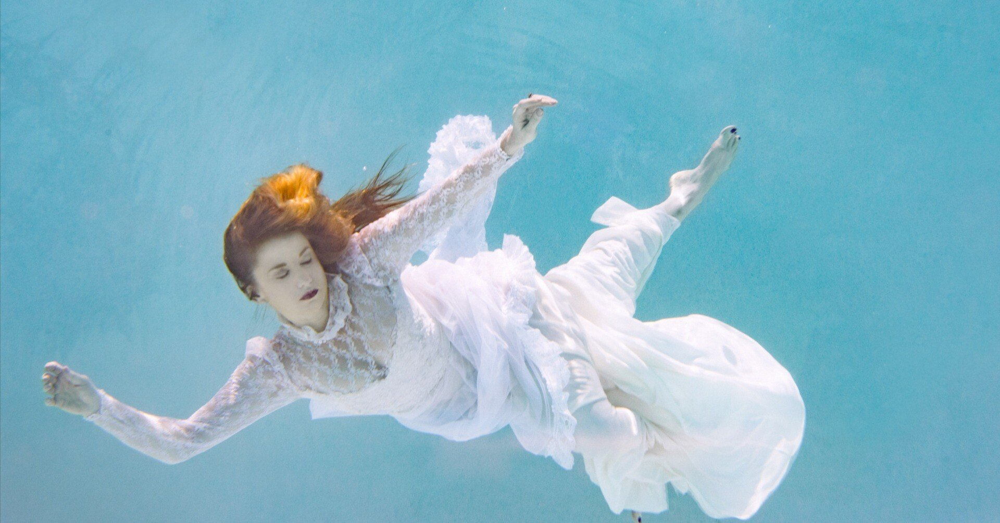

今、これを書いているのが2023年12月上旬の金曜日。深夜26時である。
昔は心に秘めていた想いを発作的に「書きたい！」と思った時に書くスタイルだった。
できることならば、生活に関するありとあらゆることを差し置いて、ずっと文章を書いていたいと物を書き始めた当初から思っている。しかし、そんなことが許されるはずもなく、毎週投稿を始めてからは週に一度(または2週に一度)、意識的にパソコンへ向かい書く時間を設けている。
実に偉そうで兼業作家然とした執筆姿勢だが、もう数年は金銭の発生する文章を書いたことがないのがこれまた皮肉な様相を呈している。
「じゃあこのエッセイもその習慣に倣って？」と読者のクエスチョンが聞こえた気がしたが、この文章は珍しく発作的に書いている。
かつてに比べると減ってきたとはいえ、未だ年に数回はこうした「発作書き」(もちろんそんな言葉は存在しない)に遭遇することが自分でも不思議だ。まだ僕のどこかに衝動的に表現したいエネルギーが眠っていたのかと思うと、意外なようにも感じて内心驚いている。
ちなみにこうした発作書きの際は、脈絡のないことをつらつらと書いていく時間が、どんどん気持ちが軽やかになっていくようでとっても楽しい。だから今回も内容に関してはお許しいただきたいと、早々に予防線を張っておく。
「一番好きな時間はいつか？」と意味のないことを自問自答していたら、僕は恐らく「金曜の深夜」と答えるだろう。
そう、今がまさにその時だ。土日が休日の僕にとって、金曜とは5日間の労働から解放され、心が一息つける貴重な曜日でもあるからだ。
そして、「深夜」というのがミソでもある。
30歳にしてようやく気がついたことではあるが、僕はどうやら生粋の夜型人間のようで、とりわけ独りで過ごせて翌日何の予定もない夜がたまらなく好きなのだ。
ひと通りの家事を済ませ、録りためていたドラマも観終わった頃。
とうとう何もすることがなくなると、僕は分厚いカーテンを引いてレースだけにし、そっと室内の電気を落とす。真っ暗になるかと思えば、隣に建つ家賃がお高そうなマンションの暖色の照明がほどよく心の垢を洗い流すように灯っていて、それをしばしボーっと眺めている。
僕にとっては大袈裟でも何でもなくて、まるでエメラルドグリーンの美しい海を堪能しているかのような気分になれる。もしかしたら、貸切の露天風呂に身を預けている時よりも心が落ち着いているのかもしれない。
ゆっくり息を吸って吐いてみる。首を回し、肩の凝りをほぐす。
ああ。今週も頑張ったなぁ。ここ数年はほかの誰よりも自分のことを褒めちぎってばかりで、時折間違った習慣を身につけてしまったものだとも考えるけれど、そうでもしないと僕の心は渇いたままのようなので当面やめるつもりはないのだ。
実のところ、｢もう少し都心に住もうかな｣などと考えたことが何度かあった。しかし、現在居住している場所が都内では珍しいほど緑が多かったり、ほどよく田舎な雰囲気だったり、何より暖色系の照明を眺めているだけの人知れない癒し時間がこの上なく好きでもあったから、引っ越しは検討するに留まっている。
あまり真剣に考えたことはなかったが、この街の居心地のよさが、仕事や対人関係で追い詰められがちな僕を何度も救ってくれたようにも思える。身近な存在ほど、そのありがたさに気づきにくいとはまさにこのことだ。
心身の回復に時間のかかる人間で、基本的に独りでいたい性格は現在進行形で苦労することも往々にしてある。
週末にしっかり休めて月曜に威勢よく仕事を始めても、週の半ばに差し掛かる頃にはまるで果てしない砂漠を水も食料もなしで数ヶ月彷徨っていたかのような疲労感を抱えている。
元々低い思考能力がさらに下降すると、ある意味鈍感になってしまうので発言や身の振り方には気をつけているつもりだが、それでもこれまで多くの人たちを傷つけてきたのだろう。
自衛のためにそうせざるを得なかった場面もあったのだろうが、手垢のつきまくった言い方をすれば「正義は立場によって変わる」のだ。
きっと僕のことが悪の親玉のように見えた人もいただろうし、物騒な言い方をすれば、そんな僕の粗悪な部分が見知らぬところで血祭りに上げられた(これは僕が何もかも悪い)ことも多々あったはずだ。
ここで一つ、この数年で諦めたことを話してもいいだろうか。
それは、「誰かとすべてにおいて分かり合う」ということ。実に抽象的で哲学チックな話題なのかもしれないが、言葉の文面以外の他意はないつもりだ。
たとえ同じ職場で、似たような境遇で、容姿が瓜二つであったとしても。
君は君で、僕は僕。同じ家に帰るわけでもないし、仮に一つ屋根の下で暮らす仲の良い夫婦や親子、兄弟であったとしても、相手に対して100％の理解はできない。
それを悲しきことと捉え、「人は結局独りである」と決めつけて諦めた……というよりも、その違いを楽しめる人間になってみたいと、今夜くらいは気前のいいことを言ってみる。
「だからこそ、人生は楽しいのだ！」とまでは笑顔で言えないが(笑)、少しでも余地があるのだとすれば、そうしたアンコントロールな部分がこれからの彩りを豊かにしてくれるのかも……と密かに感じている。
普段は見せるどころか、誰にも悟られまいと隠している節すらあるけれど、そんな淡い期待を持って毎日生きていることに、つい最近気がついた。
その90％、いや95％は、現実では真反対の出来事として自分の前に出現するのだから、そりゃ溜め息くらいつきたくなる。
でも、ふとした瞬間に、理想として掲げている5％の誰かと出会い通じ合えた時には、世界がセピア色から脱し、経験したことのない鮮やかさで塗り変わっていくような感覚になる。
家族や職場の同僚、上司とは違って友人関係はある程度選択できてしまうけれど、未だに僕なんかと繋がってくれる気の置けない仲間たちには、そんな5％の人たちが勢揃いしているのだ。言葉にならないほど感謝しているとは、僕の場合まさにこのことを指し示している。そして、そんな人たちと過ごすかけがえのない時間こそ、僕の中では金曜の深夜と同じくらい大好きな瞬間でもあるのだ。
日々仕事に追われ、マルチタスクにあたふたし、否応なしに差し迫ってくる時間との追いかけっこに勝った試しのないこの僕が、金曜の深夜にだけはそんなことを思っている。
こんなこと、到底口には出せないのだからnoteに書く。その繰り返しが僕の人生だといえるだろう。
世界中を席巻する映画や大ベストセラーの小説について話すことも実に楽しいひと時だが、ふとした時にこうした話を誰かとすることが何より愛おしい。
その人の人となりを知れるテーマ。きっとそんなものはたくさんあるのだろうが、この地球を生きる80億人超の誰もが持ち合わせているだろう各々の人生哲学を互いに語り合う時間こそ、僕にとって何ものにも代えがたい代物なのだ。
ここまで読んでみて、「果たしてこれはエッセイとして成り立っているのだろうか？」と疑問に思ってしまった。
「発作書きの連中はこれだから……」と熟練の読者に言われてしまいそうだから、今日はこの辺りで幕を閉じておいた方が身のためなのかもしれない。
時間を確認したら、もう午前4時になろうとしている。この時間は僕の好きな金曜の深夜に該当するのだろうか？
どんな駄文であろうとも何かを書いている時は、いくら気に入っているテレビ番組やYouTubeの動画を観ている時でさえ不意に頭を過る“将来に対する様々な不安”を一切感じないのだから、もはやそれは夢を見ているような感覚に近い。
だから、文章を作り自らと向き合っている時間は溶けていくように消えていく。とんでもないスピードで僕の前を過ぎ去ってしまう。実生活で唯一、儚さを感じる瞬間だ。
ちなみに明日の予定は特にない。願わくば、夜など明けず、この時間を永遠に浮遊していたい。軽快に身軽に、僕たちの人生のように。これからもそんな夢を見ていたいとも思う。